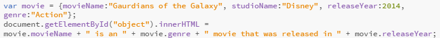

In JavaScript, almost "everything" is an object
All JavaScript values, except primitives, are objects.
Below is the script for creating a movie as an object. The script will create the object and it will also assign some properties to the movie. The script will call the object and some of it properties and then display them. Below the script is the out
A JavaScript function is a block of code designed to perform a particular task. A JavaScript function is executed when "something" invokes it (calls it).
I have created a lot of functions while working through the topics. Below is a conditional function that I created and I am going to use again as an example of what a function does. Click the button to activate the function
The inherit keyword specifies that a property should inherit its value from its parent element. The inherit keyword can be used for any CSS property, and on any HTML element.
Below is the scritp and example of inheritance using CSS. The example below was taken from w3schools and tweaked a bit. "span" was set to be color blue, however "extra span" inherits from its parents, that is why the last two examples below are different colors.
Properties are the values associated with a JavaScript object. A JavaScript object is a collection of unordered properties. Properties can usually be changed, added, and deleted, but some are read only.
In my earlier example of object, I created a object and gave it some properties. I will share that same example. The properties that coded again. The properties for the object are (movieName, studioName, releaseYear, genre)
JavaScript methods are actions that can be performed on objects. A JavaScript method is a property containing a function definition.
The example below accesses the movieInfo() method of a movie object. I have included the s script as a visual.
When an object instance is created from a class, the class's constructor function is run to create it. This process of creating an object instance from a class is called instantiation — the object instance is instantiated from the class.